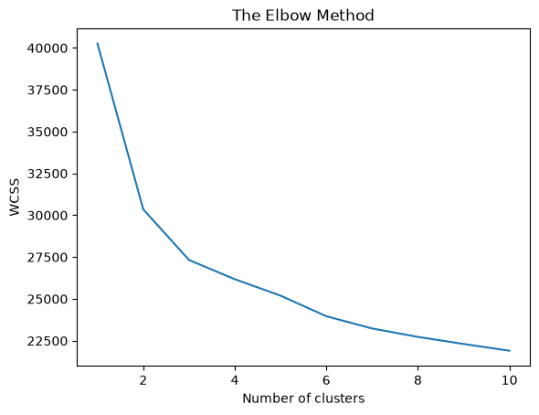
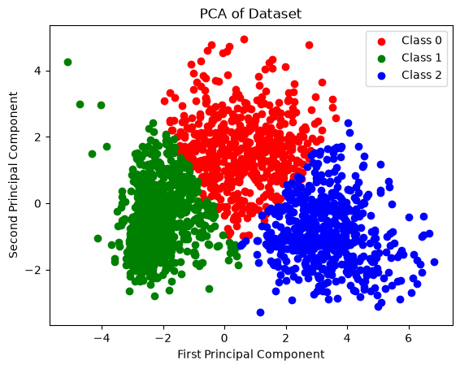
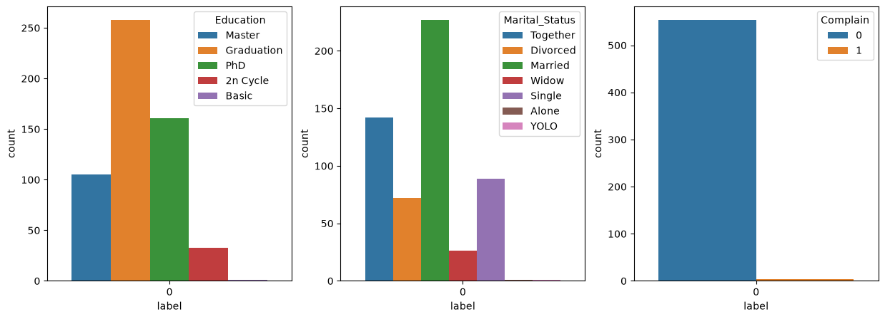
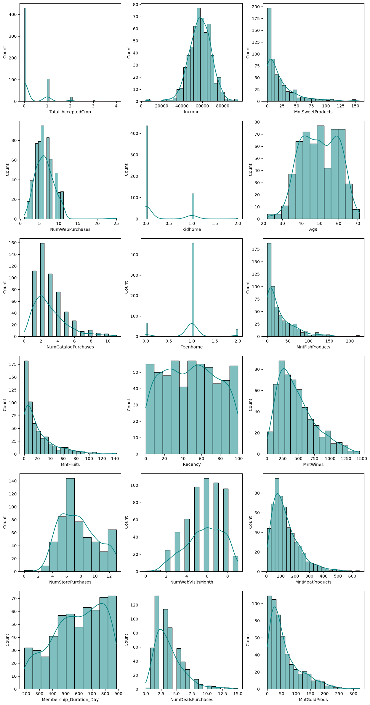
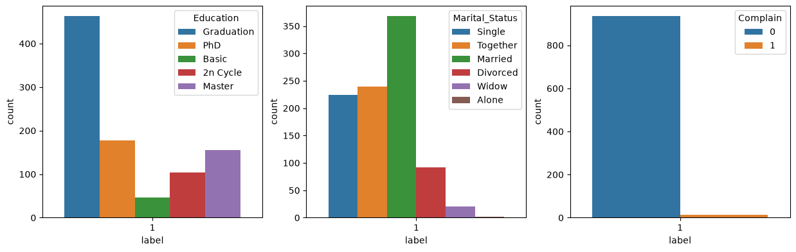
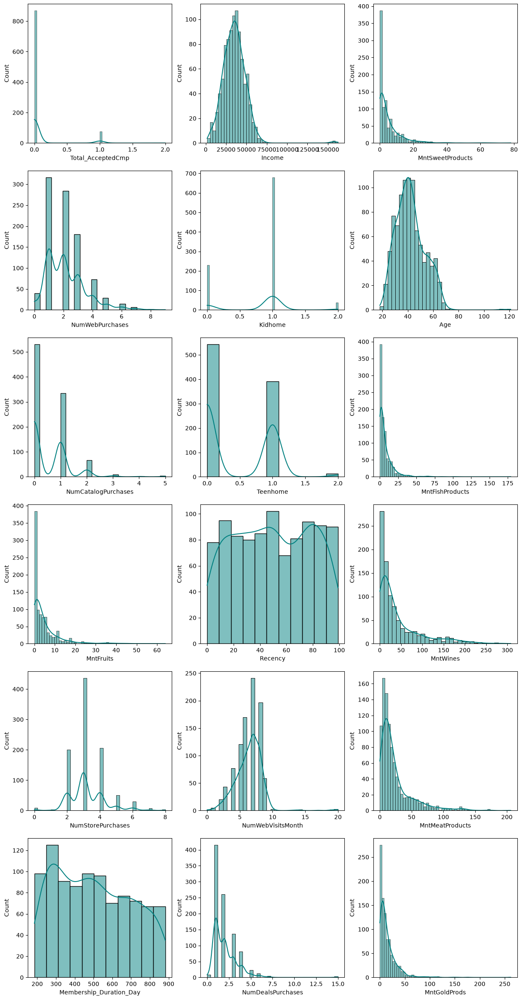
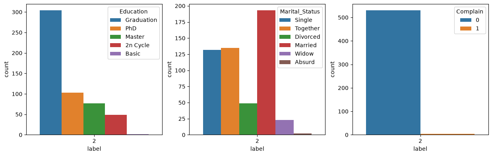
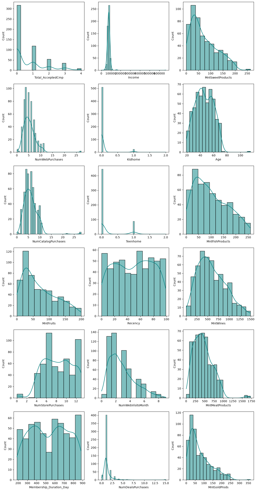

%pip install --upgrade -q matplotlib pandas scikit-learn seabornCustomers Clustering
Machine Learning
Clustering
Overview
This notebook applies unsupervised machine learning to customer segmentation by identifying groups of customers with similar purchasing characteristics within the following dataset.
The analysis explores customer behavior through these main steps:
- Data preprocessing and Exploratory Data Analysis (EDA)
- Model training
- Model evaluation
The analysis focuses on understanding the underlying structure of the data, applying K-Means clustering algorithm, and evaluating the resulting clusters to assess their quality and interpretability.
Install and Import Packages
import matplotlib.pyplot as plt
import pandas as pd
import seaborn as snsLoad Dataset
df = pd.read_csv('data/marketing_campaign.csv', delimiter='\t')
df| ID | Year_Birth | Education | Marital_Status | Income | Kidhome | Teenhome | Dt_Customer | Recency | MntWines | ... | NumWebVisitsMonth | AcceptedCmp3 | AcceptedCmp4 | AcceptedCmp5 | AcceptedCmp1 | AcceptedCmp2 | Complain | Z_CostContact | Z_Revenue | Response | |
|---|---|---|---|---|---|---|---|---|---|---|---|---|---|---|---|---|---|---|---|---|---|
| 0 | 5524 | 1957 | Graduation | Single | 58138.0 | 0 | 0 | 04-09-2012 | 58 | 635 | ... | 7 | 0 | 0 | 0 | 0 | 0 | 0 | 3 | 11 | 1 |
| 1 | 2174 | 1954 | Graduation | Single | 46344.0 | 1 | 1 | 08-03-2014 | 38 | 11 | ... | 5 | 0 | 0 | 0 | 0 | 0 | 0 | 3 | 11 | 0 |
| 2 | 4141 | 1965 | Graduation | Together | 71613.0 | 0 | 0 | 21-08-2013 | 26 | 426 | ... | 4 | 0 | 0 | 0 | 0 | 0 | 0 | 3 | 11 | 0 |
| 3 | 6182 | 1984 | Graduation | Together | 26646.0 | 1 | 0 | 10-02-2014 | 26 | 11 | ... | 6 | 0 | 0 | 0 | 0 | 0 | 0 | 3 | 11 | 0 |
| 4 | 5324 | 1981 | PhD | Married | 58293.0 | 1 | 0 | 19-01-2014 | 94 | 173 | ... | 5 | 0 | 0 | 0 | 0 | 0 | 0 | 3 | 11 | 0 |
| ... | ... | ... | ... | ... | ... | ... | ... | ... | ... | ... | ... | ... | ... | ... | ... | ... | ... | ... | ... | ... | ... |
| 2235 | 10870 | 1967 | Graduation | Married | 61223.0 | 0 | 1 | 13-06-2013 | 46 | 709 | ... | 5 | 0 | 0 | 0 | 0 | 0 | 0 | 3 | 11 | 0 |
| 2236 | 4001 | 1946 | PhD | Together | 64014.0 | 2 | 1 | 10-06-2014 | 56 | 406 | ... | 7 | 0 | 0 | 0 | 1 | 0 | 0 | 3 | 11 | 0 |
| 2237 | 7270 | 1981 | Graduation | Divorced | 56981.0 | 0 | 0 | 25-01-2014 | 91 | 908 | ... | 6 | 0 | 1 | 0 | 0 | 0 | 0 | 3 | 11 | 0 |
| 2238 | 8235 | 1956 | Master | Together | 69245.0 | 0 | 1 | 24-01-2014 | 8 | 428 | ... | 3 | 0 | 0 | 0 | 0 | 0 | 0 | 3 | 11 | 0 |
| 2239 | 9405 | 1954 | PhD | Married | 52869.0 | 1 | 1 | 15-10-2012 | 40 | 84 | ... | 7 | 0 | 0 | 0 | 0 | 0 | 0 | 3 | 11 | 1 |
2240 rows × 29 columns
Dataset Description
Columns/Features:
ID: id
Year_Birth: customer’s year birth
Education: customer’s level of education
Marital_Status: customer’s marital status
Income: customer’s yearly household income
Kidhome: number of small children in customer’s household
Teenhome: number of teenagers in customer’s household
DtCustomer: date of customer’s enrolment with the company
Recency: number of days since the last purchase
MntWines: amount spent on wine products in the last 2 years
MntFruits: amount spent on fruits products in the last 2 years
MntMeatProducts: amount spent on meat products in the last 2 years
MntFishProducts: amount spent on fish products in the last 2 years
MntSweetProducts: amount spent on sweet products in the last 2 years
MntGoldProds: amount spent on gold products in the last 2 years
AcceptedCmp1: 1 if customer accepted the offer in the 1st campaign, 0 otherwise
AcceptedCmp2: 1 if customer accepted the offer in the 2nd campaign, 0 otherwise
AcceptedCmp3: 1 if customer accepted the offer in the 3rd campaign, 0 otherwise
AcceptedCmp4: 1 if customer accepted the offer in the 4th campaign, 0 otherwise
AcceptedCmp5: 1 if customer accepted the offer in the 5th campaign, 0 otherwise
NumDealsPurchases: number of purchases made with discount
NumWebPurchases: number of purchases made through company’s web site
NumCatalogPurchases: number of purchases made using catalogue
NumStorePurchase:- number of purchases made directly in stores
NumWebVisitsMonth: number of visits to company’s web site in the last month
Complain: 1 if customer complained in the last 2 years
Response (target): 1 if customer accepted the offer in the last campaign, 0 otherwise
Acknowledgements
O. Parr-Rud. Business Analytics Using SAS Enterprise Guide and SAS Enterprise Miner. SAS Institute, 2014.
Data Preprocessing and EDA
First, let’s take a look at the datasets overview.
df.info()<class 'pandas.DataFrame'>
RangeIndex: 2240 entries, 0 to 2239
Data columns (total 29 columns):
# Column Non-Null Count Dtype
--- ------ -------------- -----
0 ID 2240 non-null int64
1 Year_Birth 2240 non-null int64
2 Education 2240 non-null str
3 Marital_Status 2240 non-null str
4 Income 2216 non-null float64
5 Kidhome 2240 non-null int64
6 Teenhome 2240 non-null int64
7 Dt_Customer 2240 non-null str
8 Recency 2240 non-null int64
9 MntWines 2240 non-null int64
10 MntFruits 2240 non-null int64
11 MntMeatProducts 2240 non-null int64
12 MntFishProducts 2240 non-null int64
13 MntSweetProducts 2240 non-null int64
14 MntGoldProds 2240 non-null int64
15 NumDealsPurchases 2240 non-null int64
16 NumWebPurchases 2240 non-null int64
17 NumCatalogPurchases 2240 non-null int64
18 NumStorePurchases 2240 non-null int64
19 NumWebVisitsMonth 2240 non-null int64
20 AcceptedCmp3 2240 non-null int64
21 AcceptedCmp4 2240 non-null int64
22 AcceptedCmp5 2240 non-null int64
23 AcceptedCmp1 2240 non-null int64
24 AcceptedCmp2 2240 non-null int64
25 Complain 2240 non-null int64
26 Z_CostContact 2240 non-null int64
27 Z_Revenue 2240 non-null int64
28 Response 2240 non-null int64
dtypes: float64(1), int64(25), str(3)
memory usage: 507.6 KBBased on the output above, here are some informations about the dataset. - The dataset has 2240 rows and 29 columns. - There is a feature with missing values. - The features consist of both numerical and categorical features, also a date data.
Also, based on the dataset description, the dataset was meant to build a classification model for response variable. However, in this assignment, we are going to do a clustering, an unsupervised learning which doesn’t need label or target variable. So, the Response column need to be dropped prior to clustering because it represents the target label for supervised tasks. Since clustering is an unsupervised technique aimed at discovering natural patterns within customer demographics and behaviors, including the target variable would introduce label leakage and bias the cluster formation.
There are also some features that are not described in the dataset description: Z_CostContact and Z_Revenue. Let’s see those features.
df['Z_CostContact'].value_counts()Z_CostContact
3 2240
Name: count, dtype: int64df['Z_Revenue'].value_counts()Z_Revenue
11 2240
Name: count, dtype: int64Notice that they are having only one value for all rows. This means they don’t have important information just like column ID. So, we also need to drop ID, Z_CostContact, and Z_Revenue.
Drop Unnecessary Columns
df = df.drop(columns=['ID', 'Z_CostContact', 'Z_Revenue', 'Response'])
df| Year_Birth | Education | Marital_Status | Income | Kidhome | Teenhome | Dt_Customer | Recency | MntWines | MntFruits | ... | NumWebPurchases | NumCatalogPurchases | NumStorePurchases | NumWebVisitsMonth | AcceptedCmp3 | AcceptedCmp4 | AcceptedCmp5 | AcceptedCmp1 | AcceptedCmp2 | Complain | |
|---|---|---|---|---|---|---|---|---|---|---|---|---|---|---|---|---|---|---|---|---|---|
| 0 | 1957 | Graduation | Single | 58138.0 | 0 | 0 | 04-09-2012 | 58 | 635 | 88 | ... | 8 | 10 | 4 | 7 | 0 | 0 | 0 | 0 | 0 | 0 |
| 1 | 1954 | Graduation | Single | 46344.0 | 1 | 1 | 08-03-2014 | 38 | 11 | 1 | ... | 1 | 1 | 2 | 5 | 0 | 0 | 0 | 0 | 0 | 0 |
| 2 | 1965 | Graduation | Together | 71613.0 | 0 | 0 | 21-08-2013 | 26 | 426 | 49 | ... | 8 | 2 | 10 | 4 | 0 | 0 | 0 | 0 | 0 | 0 |
| 3 | 1984 | Graduation | Together | 26646.0 | 1 | 0 | 10-02-2014 | 26 | 11 | 4 | ... | 2 | 0 | 4 | 6 | 0 | 0 | 0 | 0 | 0 | 0 |
| 4 | 1981 | PhD | Married | 58293.0 | 1 | 0 | 19-01-2014 | 94 | 173 | 43 | ... | 5 | 3 | 6 | 5 | 0 | 0 | 0 | 0 | 0 | 0 |
| ... | ... | ... | ... | ... | ... | ... | ... | ... | ... | ... | ... | ... | ... | ... | ... | ... | ... | ... | ... | ... | ... |
| 2235 | 1967 | Graduation | Married | 61223.0 | 0 | 1 | 13-06-2013 | 46 | 709 | 43 | ... | 9 | 3 | 4 | 5 | 0 | 0 | 0 | 0 | 0 | 0 |
| 2236 | 1946 | PhD | Together | 64014.0 | 2 | 1 | 10-06-2014 | 56 | 406 | 0 | ... | 8 | 2 | 5 | 7 | 0 | 0 | 0 | 1 | 0 | 0 |
| 2237 | 1981 | Graduation | Divorced | 56981.0 | 0 | 0 | 25-01-2014 | 91 | 908 | 48 | ... | 2 | 3 | 13 | 6 | 0 | 1 | 0 | 0 | 0 | 0 |
| 2238 | 1956 | Master | Together | 69245.0 | 0 | 1 | 24-01-2014 | 8 | 428 | 30 | ... | 6 | 5 | 10 | 3 | 0 | 0 | 0 | 0 | 0 | 0 |
| 2239 | 1954 | PhD | Married | 52869.0 | 1 | 1 | 15-10-2012 | 40 | 84 | 3 | ... | 3 | 1 | 4 | 7 | 0 | 0 | 0 | 0 | 0 | 0 |
2240 rows × 25 columns
Checking dan Dropping Duplicated Rows
# check and drop duplicated rows (if exist)
total_duplicates = df.duplicated().sum()
print(f'Total duplicated rows: {total_duplicates}')
if total_duplicates:
df = df.drop_duplicates().reset_index(drop=True)
print('All duplicated rows has been removed.')
else:
print('No duplicated rows need to be dropped.')Total duplicated rows: 201
All duplicated rows has been removed.df.info()<class 'pandas.DataFrame'>
RangeIndex: 2039 entries, 0 to 2038
Data columns (total 25 columns):
# Column Non-Null Count Dtype
--- ------ -------------- -----
0 Year_Birth 2039 non-null int64
1 Education 2039 non-null str
2 Marital_Status 2039 non-null str
3 Income 2015 non-null float64
4 Kidhome 2039 non-null int64
5 Teenhome 2039 non-null int64
6 Dt_Customer 2039 non-null str
7 Recency 2039 non-null int64
8 MntWines 2039 non-null int64
9 MntFruits 2039 non-null int64
10 MntMeatProducts 2039 non-null int64
11 MntFishProducts 2039 non-null int64
12 MntSweetProducts 2039 non-null int64
13 MntGoldProds 2039 non-null int64
14 NumDealsPurchases 2039 non-null int64
15 NumWebPurchases 2039 non-null int64
16 NumCatalogPurchases 2039 non-null int64
17 NumStorePurchases 2039 non-null int64
18 NumWebVisitsMonth 2039 non-null int64
19 AcceptedCmp3 2039 non-null int64
20 AcceptedCmp4 2039 non-null int64
21 AcceptedCmp5 2039 non-null int64
22 AcceptedCmp1 2039 non-null int64
23 AcceptedCmp2 2039 non-null int64
24 Complain 2039 non-null int64
dtypes: float64(1), int64(21), str(3)
memory usage: 398.4 KBHandling Missing Values
Remember that the dataset has missing values.
df.isna().sum()Year_Birth 0
Education 0
Marital_Status 0
Income 24
Kidhome 0
Teenhome 0
Dt_Customer 0
Recency 0
MntWines 0
MntFruits 0
MntMeatProducts 0
MntFishProducts 0
MntSweetProducts 0
MntGoldProds 0
NumDealsPurchases 0
NumWebPurchases 0
NumCatalogPurchases 0
NumStorePurchases 0
NumWebVisitsMonth 0
AcceptedCmp3 0
AcceptedCmp4 0
AcceptedCmp5 0
AcceptedCmp1 0
AcceptedCmp2 0
Complain 0
dtype: int64The only feature that has missing values is Income. Let’s handle this using imputation by median to mitigate the influence of extreme values.
df['Income'] = df['Income'].fillna(df['Income'].median())df.isna().sum()Year_Birth 0
Education 0
Marital_Status 0
Income 0
Kidhome 0
Teenhome 0
Dt_Customer 0
Recency 0
MntWines 0
MntFruits 0
MntMeatProducts 0
MntFishProducts 0
MntSweetProducts 0
MntGoldProds 0
NumDealsPurchases 0
NumWebPurchases 0
NumCatalogPurchases 0
NumStorePurchases 0
NumWebVisitsMonth 0
AcceptedCmp3 0
AcceptedCmp4 0
AcceptedCmp5 0
AcceptedCmp1 0
AcceptedCmp2 0
Complain 0
dtype: int64Feature Engineering
Raw birth years (e.g., 1970, 1985) serve as temporal identifiers rather than meaningful numerical distances for distance-based clustering algorithms like K-Means. To make this information actionable, Year_Birth was converted into a continuous Age feature calculated relative to the dataset’s collection period (2014):
\[\text{Age} = 2014 - \text{Year\_Birth}\]
Converting birth years into age provides a standardized continuous variable that intuitively reflects customer life stages and demographic profiles, making it suitable for feature scaling and interpretation.
Then, the distance-based algorithms (K-Means) cannot directly interpret datetime formats or string-based date stamps. Furthermore, specific join dates lack context regarding customer loyalty. To extract functional value, Dt_Customer was transformed into Customer_Tenure_Days, measuring the total number of days a customer has been registered relative to the end of the data collection window (December 31, 2014):
\[\text{Membership\_Duration\_Day} = \text{Reference Date (31-12-2014)} - \text{Dt\_Customer}\]
This conversion creates a continuous metric representing customer loyalty and tenure duration, allowing algorithms to compute meaningful Euclidean distances between long-term and newly acquired customers.
feat_eng_df = df.copy()
feat_eng_df['Year_Birth'] = feat_eng_df['Year_Birth'].apply(lambda x: 2014 - x)
feat_eng_df['Dt_Customer'] = pd.to_datetime(feat_eng_df['Dt_Customer'], format='%d-%m-%Y')
feat_eng_df['Dt_Customer'] = (pd.to_datetime('31-12-2014', format='%d-%m-%Y') - feat_eng_df['Dt_Customer']).dt.days
feat_eng_df = feat_eng_df.rename(columns={'Year_Birth': 'Age', 'Dt_Customer': 'Membership_Duration_Day'})feat_eng_df.head()| Age | Education | Marital_Status | Income | Kidhome | Teenhome | Membership_Duration_Day | Recency | MntWines | MntFruits | ... | NumWebPurchases | NumCatalogPurchases | NumStorePurchases | NumWebVisitsMonth | AcceptedCmp3 | AcceptedCmp4 | AcceptedCmp5 | AcceptedCmp1 | AcceptedCmp2 | Complain | |
|---|---|---|---|---|---|---|---|---|---|---|---|---|---|---|---|---|---|---|---|---|---|
| 0 | 57 | Graduation | Single | 58138.0 | 0 | 0 | 848 | 58 | 635 | 88 | ... | 8 | 10 | 4 | 7 | 0 | 0 | 0 | 0 | 0 | 0 |
| 1 | 60 | Graduation | Single | 46344.0 | 1 | 1 | 298 | 38 | 11 | 1 | ... | 1 | 1 | 2 | 5 | 0 | 0 | 0 | 0 | 0 | 0 |
| 2 | 49 | Graduation | Together | 71613.0 | 0 | 0 | 497 | 26 | 426 | 49 | ... | 8 | 2 | 10 | 4 | 0 | 0 | 0 | 0 | 0 | 0 |
| 3 | 30 | Graduation | Together | 26646.0 | 1 | 0 | 324 | 26 | 11 | 4 | ... | 2 | 0 | 4 | 6 | 0 | 0 | 0 | 0 | 0 | 0 |
| 4 | 33 | PhD | Married | 58293.0 | 1 | 0 | 346 | 94 | 173 | 43 | ... | 5 | 3 | 6 | 5 | 0 | 0 | 0 | 0 | 0 | 0 |
5 rows × 25 columns
The dataset contains five individual binary indicators (AcceptedCmp1 through AcceptedCmp5) representing historical campaign acceptances. Keeping these as separate binary columns creates high sparsity and adds unhelpful dimensionality to distance metrics. To capture overall engagement without distorting cluster distances, these binary columns were aggregated into a single continuous feature:
\[\text{Total\_Accepted\_Cmp} = \sum_{i=1}^{5} \text{AcceptedCmp}_i\]
Aggregating these columns summarizes a customer’s overall responsiveness to marketing promotions into a single metric. This reduces dimensionality, eliminates sparse binary redundancy, and provides a clearer indication of promotional sensitivity across different customer segments.
feat_eng_df['Total_AcceptedCmp'] = (feat_eng_df['AcceptedCmp1'] + feat_eng_df['AcceptedCmp2'] + feat_eng_df['AcceptedCmp3']
+ feat_eng_df['AcceptedCmp4'] + feat_eng_df['AcceptedCmp5'])
feat_eng_df = feat_eng_df.drop(columns=['AcceptedCmp1', 'AcceptedCmp2', 'AcceptedCmp3', 'AcceptedCmp4', 'AcceptedCmp5'])feat_eng_df.head()| Age | Education | Marital_Status | Income | Kidhome | Teenhome | Membership_Duration_Day | Recency | MntWines | MntFruits | ... | MntFishProducts | MntSweetProducts | MntGoldProds | NumDealsPurchases | NumWebPurchases | NumCatalogPurchases | NumStorePurchases | NumWebVisitsMonth | Complain | Total_AcceptedCmp | |
|---|---|---|---|---|---|---|---|---|---|---|---|---|---|---|---|---|---|---|---|---|---|
| 0 | 57 | Graduation | Single | 58138.0 | 0 | 0 | 848 | 58 | 635 | 88 | ... | 172 | 88 | 88 | 3 | 8 | 10 | 4 | 7 | 0 | 0 |
| 1 | 60 | Graduation | Single | 46344.0 | 1 | 1 | 298 | 38 | 11 | 1 | ... | 2 | 1 | 6 | 2 | 1 | 1 | 2 | 5 | 0 | 0 |
| 2 | 49 | Graduation | Together | 71613.0 | 0 | 0 | 497 | 26 | 426 | 49 | ... | 111 | 21 | 42 | 1 | 8 | 2 | 10 | 4 | 0 | 0 |
| 3 | 30 | Graduation | Together | 26646.0 | 1 | 0 | 324 | 26 | 11 | 4 | ... | 10 | 3 | 5 | 2 | 2 | 0 | 4 | 6 | 0 | 0 |
| 4 | 33 | PhD | Married | 58293.0 | 1 | 0 | 346 | 94 | 173 | 43 | ... | 46 | 27 | 15 | 5 | 5 | 3 | 6 | 5 | 0 | 0 |
5 rows × 21 columns
Now, let’s separate the dataframe into 2 parts: numerical features only and categorical features only.
cat_columns = ['Education', 'Marital_Status', 'Complain']
num_columns = list(set(feat_eng_df.columns) - set(cat_columns))
cat_df = feat_eng_df[cat_columns]
num_df = feat_eng_df[num_columns]cat_df| Education | Marital_Status | Complain | |
|---|---|---|---|
| 0 | Graduation | Single | 0 |
| 1 | Graduation | Single | 0 |
| 2 | Graduation | Together | 0 |
| 3 | Graduation | Together | 0 |
| 4 | PhD | Married | 0 |
| ... | ... | ... | ... |
| 2034 | Graduation | Together | 0 |
| 2035 | Graduation | Married | 0 |
| 2036 | Graduation | Divorced | 0 |
| 2037 | Master | Together | 0 |
| 2038 | PhD | Married | 0 |
2039 rows × 3 columns
num_df| Total_AcceptedCmp | Income | MntSweetProducts | NumWebPurchases | Kidhome | Age | NumCatalogPurchases | Teenhome | MntFishProducts | MntFruits | Recency | MntWines | NumStorePurchases | NumWebVisitsMonth | MntMeatProducts | Membership_Duration_Day | NumDealsPurchases | MntGoldProds | |
|---|---|---|---|---|---|---|---|---|---|---|---|---|---|---|---|---|---|---|
| 0 | 0 | 58138.0 | 88 | 8 | 0 | 57 | 10 | 0 | 172 | 88 | 58 | 635 | 4 | 7 | 546 | 848 | 3 | 88 |
| 1 | 0 | 46344.0 | 1 | 1 | 1 | 60 | 1 | 1 | 2 | 1 | 38 | 11 | 2 | 5 | 6 | 298 | 2 | 6 |
| 2 | 0 | 71613.0 | 21 | 8 | 0 | 49 | 2 | 0 | 111 | 49 | 26 | 426 | 10 | 4 | 127 | 497 | 1 | 42 |
| 3 | 0 | 26646.0 | 3 | 2 | 1 | 30 | 0 | 0 | 10 | 4 | 26 | 11 | 4 | 6 | 20 | 324 | 2 | 5 |
| 4 | 0 | 58293.0 | 27 | 5 | 1 | 33 | 3 | 0 | 46 | 43 | 94 | 173 | 6 | 5 | 118 | 346 | 5 | 15 |
| ... | ... | ... | ... | ... | ... | ... | ... | ... | ... | ... | ... | ... | ... | ... | ... | ... | ... | ... |
| 2034 | 0 | 666666.0 | 1 | 3 | 1 | 37 | 1 | 0 | 8 | 14 | 23 | 9 | 3 | 6 | 18 | 577 | 4 | 12 |
| 2035 | 0 | 61223.0 | 118 | 9 | 0 | 47 | 3 | 1 | 42 | 43 | 46 | 709 | 4 | 5 | 182 | 566 | 2 | 247 |
| 2036 | 1 | 56981.0 | 12 | 2 | 0 | 33 | 3 | 0 | 32 | 48 | 91 | 908 | 13 | 6 | 217 | 340 | 1 | 24 |
| 2037 | 0 | 69245.0 | 30 | 6 | 0 | 58 | 5 | 1 | 80 | 30 | 8 | 428 | 10 | 3 | 214 | 341 | 2 | 61 |
| 2038 | 0 | 52869.0 | 1 | 3 | 1 | 60 | 1 | 1 | 2 | 3 | 40 | 84 | 4 | 7 | 61 | 807 | 3 | 21 |
2039 rows × 18 columns
Scaling Numerical Features
Based on the displayed num_df, we can see that the numerical features exhibit vastly different scales and measurement ranges. StandardScaler is applied to transform all numerical features to possess a mean of 0 and a standard deviation of 1 (\(\mu = 0, \sigma = 1\)).
from sklearn.preprocessing import StandardScaler
scaler = StandardScaler()
num = num_df.values
num_scaled = scaler.fit_transform(num)
num_scaled_df = pd.DataFrame(num_scaled, columns=num_columns)num_scaled_df| Total_AcceptedCmp | Income | MntSweetProducts | NumWebPurchases | Kidhome | Age | NumCatalogPurchases | Teenhome | MntFishProducts | MntFruits | Recency | MntWines | NumStorePurchases | NumWebVisitsMonth | MntMeatProducts | Membership_Duration_Day | NumDealsPurchases | MntGoldProds | |
|---|---|---|---|---|---|---|---|---|---|---|---|---|---|---|---|---|---|---|
| 0 | -0.440728 | 0.227572 | 1.457954 | 1.393739 | -0.827258 | 0.982294 | 2.500739 | -0.928320 | 2.460044 | 1.548411 | 0.307359 | 0.987869 | -0.547717 | 0.693037 | 1.659882 | 1.541257 | 0.346961 | 0.850571 |
| 1 | -0.440728 | -0.236329 | -0.628805 | -1.106932 | 1.032476 | 1.232708 | -0.565001 | 0.900515 | -0.648302 | -0.636735 | -0.383073 | -0.870707 | -1.165755 | -0.127342 | -0.709844 | -1.183111 | -0.170183 | -0.725991 |
| 2 | -0.440728 | 0.757593 | -0.149090 | 1.393739 | -0.827258 | 0.314522 | -0.224363 | -0.928320 | 1.344696 | 0.568863 | -0.797331 | 0.365365 | 1.306397 | -0.537531 | -0.178850 | -0.197385 | -0.687328 | -0.033842 |
| 3 | -0.440728 | -1.011123 | -0.580834 | -0.749693 | 1.032476 | -1.271435 | -0.905639 | -0.928320 | -0.502027 | -0.561386 | -0.797331 | -0.870707 | -0.547717 | 0.282848 | -0.648406 | -1.054323 | -0.170183 | -0.745217 |
| 4 | -0.440728 | 0.233669 | -0.005176 | 0.322023 | 1.032476 | -1.021021 | 0.116275 | -0.928320 | 0.156211 | 0.418163 | 1.550135 | -0.388192 | 0.070321 | -0.127342 | -0.218345 | -0.945348 | 1.381250 | -0.552953 |
| ... | ... | ... | ... | ... | ... | ... | ... | ... | ... | ... | ... | ... | ... | ... | ... | ... | ... | ... |
| 2034 | -0.440728 | 24.163198 | -0.628805 | -0.392454 | 1.032476 | -0.687135 | -0.565001 | -0.928320 | -0.538596 | -0.310219 | -0.900896 | -0.876664 | -0.856736 | 0.282848 | -0.657183 | 0.198887 | 0.864106 | -0.610633 |
| 2035 | -0.440728 | 0.348917 | 2.177526 | 1.750978 | -0.827258 | 0.147579 | 0.116275 | 0.900515 | 0.083073 | 0.418163 | -0.106900 | 1.208277 | -0.547717 | -0.127342 | 0.062511 | 0.144399 | -0.170183 | 3.907562 |
| 2036 | 1.032460 | 0.182063 | -0.364962 | -0.749693 | -0.827258 | -1.021021 | 0.116275 | -0.928320 | -0.099771 | 0.543746 | 1.446570 | 1.800996 | 2.233454 | 0.282848 | 0.216105 | -0.975069 | -0.687328 | -0.379916 |
| 2037 | -0.440728 | 0.664451 | 0.066781 | 0.679262 | -0.827258 | 1.065765 | 0.797550 | 0.900515 | 0.777880 | 0.091647 | -1.418719 | 0.371322 | 1.306397 | -0.947721 | 0.202939 | -0.970115 | -0.170183 | 0.331459 |
| 2038 | -0.440728 | 0.020323 | -0.628805 | -0.392454 | 1.032476 | 1.232708 | -0.565001 | 0.900515 | -0.648302 | -0.586502 | -0.314029 | -0.653278 | -0.547717 | 0.693037 | -0.468483 | 1.338168 | 0.346961 | -0.437595 |
2039 rows × 18 columns
Encoding Categorical Features
Note that machine learning algorithms can only process number. This means we need to encode the categorical features.
cat_df.head()| Education | Marital_Status | Complain | |
|---|---|---|---|
| 0 | Graduation | Single | 0 |
| 1 | Graduation | Single | 0 |
| 2 | Graduation | Together | 0 |
| 3 | Graduation | Together | 0 |
| 4 | PhD | Married | 0 |
Before that, separate the categorical features only dataframe into 3 parts: ordinal categorical features that need encoding, nominal categorical features that need encoding, and categorical features that has already encoded.
ord_cat_columns = ['Education']
nom_cat_columns = ['Marital_Status']
ord_cat_df = cat_df[ord_cat_columns]
nom_cat_df = cat_df[nom_cat_columns]
alr_encoded_cat_df = cat_df.drop(columns=ord_cat_columns + nom_cat_columns)alr_encoded_cat_df| Complain | |
|---|---|
| 0 | 0 |
| 1 | 0 |
| 2 | 0 |
| 3 | 0 |
| 4 | 0 |
| ... | ... |
| 2034 | 0 |
| 2035 | 0 |
| 2036 | 0 |
| 2037 | 0 |
| 2038 | 0 |
2039 rows × 1 columns
Ordinal Encoding
Let’s see the ordinal category
ord_cat_df.head()| Education | |
|---|---|
| 0 | Graduation |
| 1 | Graduation |
| 2 | Graduation |
| 3 | Graduation |
| 4 | PhD |
ord_cat_df.value_counts()Education
Graduation 1025
PhD 442
Master 337
2n Cycle 186
Basic 49
Name: count, dtype: int64# create ordinal mapping
education_mapping = {'Basic': 1, '2n Cycle': 2, 'Graduation': 3, 'Master': 4, 'PhD': 5}
ord_cat_df['Education'] = ord_cat_df['Education'].map(education_mapping)
ord_cat_df| Education | |
|---|---|
| 0 | 3 |
| 1 | 3 |
| 2 | 3 |
| 3 | 3 |
| 4 | 5 |
| ... | ... |
| 2034 | 3 |
| 2035 | 3 |
| 2036 | 3 |
| 2037 | 4 |
| 2038 | 5 |
2039 rows × 1 columns
One-Hot Encoding
nom_cat_encoded_df = pd.get_dummies(nom_cat_df, columns=nom_cat_df.columns, drop_first=True, dtype=int)
nom_cat_encoded_df| Marital_Status_Alone | Marital_Status_Divorced | Marital_Status_Married | Marital_Status_Single | Marital_Status_Together | Marital_Status_Widow | Marital_Status_YOLO | |
|---|---|---|---|---|---|---|---|
| 0 | 0 | 0 | 0 | 1 | 0 | 0 | 0 |
| 1 | 0 | 0 | 0 | 1 | 0 | 0 | 0 |
| 2 | 0 | 0 | 0 | 0 | 1 | 0 | 0 |
| 3 | 0 | 0 | 0 | 0 | 1 | 0 | 0 |
| 4 | 0 | 0 | 1 | 0 | 0 | 0 | 0 |
| ... | ... | ... | ... | ... | ... | ... | ... |
| 2034 | 0 | 0 | 0 | 0 | 1 | 0 | 0 |
| 2035 | 0 | 0 | 1 | 0 | 0 | 0 | 0 |
| 2036 | 0 | 1 | 0 | 0 | 0 | 0 | 0 |
| 2037 | 0 | 0 | 0 | 0 | 1 | 0 | 0 |
| 2038 | 0 | 0 | 1 | 0 | 0 | 0 | 0 |
2039 rows × 7 columns
# concat all the preprocessed dataframes
df_preprocessed = pd.concat([num_scaled_df, alr_encoded_cat_df, ord_cat_df, nom_cat_encoded_df], axis=1).sort_index(axis=1)
df_preprocessed.head()| Age | Complain | Education | Income | Kidhome | Marital_Status_Alone | Marital_Status_Divorced | Marital_Status_Married | Marital_Status_Single | Marital_Status_Together | ... | MntSweetProducts | MntWines | NumCatalogPurchases | NumDealsPurchases | NumStorePurchases | NumWebPurchases | NumWebVisitsMonth | Recency | Teenhome | Total_AcceptedCmp | |
|---|---|---|---|---|---|---|---|---|---|---|---|---|---|---|---|---|---|---|---|---|---|
| 0 | 0.982294 | 0 | 3 | 0.227572 | -0.827258 | 0 | 0 | 0 | 1 | 0 | ... | 1.457954 | 0.987869 | 2.500739 | 0.346961 | -0.547717 | 1.393739 | 0.693037 | 0.307359 | -0.928320 | -0.440728 |
| 1 | 1.232708 | 0 | 3 | -0.236329 | 1.032476 | 0 | 0 | 0 | 1 | 0 | ... | -0.628805 | -0.870707 | -0.565001 | -0.170183 | -1.165755 | -1.106932 | -0.127342 | -0.383073 | 0.900515 | -0.440728 |
| 2 | 0.314522 | 0 | 3 | 0.757593 | -0.827258 | 0 | 0 | 0 | 0 | 1 | ... | -0.149090 | 0.365365 | -0.224363 | -0.687328 | 1.306397 | 1.393739 | -0.537531 | -0.797331 | -0.928320 | -0.440728 |
| 3 | -1.271435 | 0 | 3 | -1.011123 | 1.032476 | 0 | 0 | 0 | 0 | 1 | ... | -0.580834 | -0.870707 | -0.905639 | -0.170183 | -0.547717 | -0.749693 | 0.282848 | -0.797331 | -0.928320 | -0.440728 |
| 4 | -1.021021 | 0 | 5 | 0.233669 | 1.032476 | 0 | 0 | 1 | 0 | 0 | ... | -0.005176 | -0.388192 | 0.116275 | 1.381250 | 0.070321 | 0.322023 | -0.127342 | 1.550135 | -0.928320 | -0.440728 |
5 rows × 27 columns
Train Model
X = df_preprocessed.valuesFind The Best K
To find the best k, we can use elbow method.
from sklearn.cluster import KMeans
# Using the elbow method to find the optimal number of clusters
wcss = []
for i in range(1, 11):
kmeans = KMeans(n_clusters = i, init = 'k-means++', random_state = 42)
kmeans.fit(X)
wcss.append(kmeans.inertia_)
plt.plot(range(1, 11), wcss)
plt.title('The Elbow Method')
plt.xlabel('Number of clusters')
plt.ylabel('WCSS')
plt.show()
From the elbow plot above, the elbow curve is relatively smooth. Identifying the “elbow” kind of somewhat subjective—choosing between \(k=2\) and \(k=3\). To determine this objectively, let’s try another method which is silhouette score.
from sklearn.metrics import silhouette_score
scores = []
for i in range(2,11):
kmeans = KMeans(n_clusters = i, init = 'k-means++', random_state = 42)
kmeans.fit(X)
labels = kmeans.labels_
score = silhouette_score(X, labels)
if scores:
last_score = scores[-1]
print (f'k = {i} | Silhouette score: {silhouette_score(X, labels):.4f} | Change from previous score: {(score - last_score):.4f}')
else:
print (f'k = {i} | Silhouette score: {silhouette_score(X, labels):.4f} | Change from previous score: -')
scores.append(score)
k = 2 | Silhouette score: 0.2508 | Change from previous score: -
k = 3 | Silhouette score: 0.1825 | Change from previous score: -0.0683
k = 4 | Silhouette score: 0.1755 | Change from previous score: -0.0071
k = 5 | Silhouette score: 0.1544 | Change from previous score: -0.0210
k = 6 | Silhouette score: 0.1126 | Change from previous score: -0.0418
k = 7 | Silhouette score: 0.1101 | Change from previous score: -0.0025
k = 8 | Silhouette score: 0.1046 | Change from previous score: -0.0055
k = 9 | Silhouette score: 0.0901 | Change from previous score: -0.0144
k = 10 | Silhouette score: 0.0883 | Change from previous score: -0.0018Based on the silhouette scores, the best value for k is k = 3.
It is because k = 3 gives the highest score reduction from the previous silhouette score.
Apply The Best K
kmeans = KMeans(n_clusters=3, init='k-means++', random_state=42)
kmeans.fit(X)
labels = kmeans.labels_
print(labels)[2 1 2 ... 2 0 1]Model Evaluation
print(f'Intertia: {kmeans.inertia_}')Intertia: 27326.500366475124The final K-Means model with \(k=3\) achieved an Inertia (Within-Cluster Sum of Squares) of 27326. This value represents the total squared distance of samples to their assigned cluster centers, reflecting the compactness of the formed clusters relative to the scaled feature space.
Save Results
feat_eng_df = feat_eng_df.sort_index(axis=1)
feat_eng_df['label'] = labels
feat_eng_df| Age | Education | Marital_Status | Income | Kidhome | Teenhome | Membership_Duration_Day | Recency | MntWines | MntFruits | ... | MntSweetProducts | MntGoldProds | NumDealsPurchases | NumWebPurchases | NumCatalogPurchases | NumStorePurchases | NumWebVisitsMonth | Complain | Total_AcceptedCmp | label | |
|---|---|---|---|---|---|---|---|---|---|---|---|---|---|---|---|---|---|---|---|---|---|
| 0 | 57 | Graduation | Single | 58138.0 | 0 | 0 | 848 | 58 | 635 | 88 | ... | 88 | 88 | 3 | 8 | 10 | 4 | 7 | 0 | 0 | 2 |
| 1 | 60 | Graduation | Single | 46344.0 | 1 | 1 | 298 | 38 | 11 | 1 | ... | 1 | 6 | 2 | 1 | 1 | 2 | 5 | 0 | 0 | 1 |
| 2 | 49 | Graduation | Together | 71613.0 | 0 | 0 | 497 | 26 | 426 | 49 | ... | 21 | 42 | 1 | 8 | 2 | 10 | 4 | 0 | 0 | 2 |
| 3 | 30 | Graduation | Together | 26646.0 | 1 | 0 | 324 | 26 | 11 | 4 | ... | 3 | 5 | 2 | 2 | 0 | 4 | 6 | 0 | 0 | 1 |
| 4 | 33 | PhD | Married | 58293.0 | 1 | 0 | 346 | 94 | 173 | 43 | ... | 27 | 15 | 5 | 5 | 3 | 6 | 5 | 0 | 0 | 1 |
| ... | ... | ... | ... | ... | ... | ... | ... | ... | ... | ... | ... | ... | ... | ... | ... | ... | ... | ... | ... | ... | ... |
| 2034 | 37 | Graduation | Together | 666666.0 | 1 | 0 | 577 | 23 | 9 | 14 | ... | 1 | 12 | 4 | 3 | 1 | 3 | 6 | 0 | 0 | 2 |
| 2035 | 47 | Graduation | Married | 61223.0 | 0 | 1 | 566 | 46 | 709 | 43 | ... | 118 | 247 | 2 | 9 | 3 | 4 | 5 | 0 | 0 | 0 |
| 2036 | 33 | Graduation | Divorced | 56981.0 | 0 | 0 | 340 | 91 | 908 | 48 | ... | 12 | 24 | 1 | 2 | 3 | 13 | 6 | 0 | 1 | 2 |
| 2037 | 58 | Master | Together | 69245.0 | 0 | 1 | 341 | 8 | 428 | 30 | ... | 30 | 61 | 2 | 6 | 5 | 10 | 3 | 0 | 0 | 0 |
| 2038 | 60 | PhD | Married | 52869.0 | 1 | 1 | 807 | 40 | 84 | 3 | ... | 1 | 21 | 3 | 3 | 1 | 4 | 7 | 0 | 0 | 1 |
2039 rows × 22 columns
Results Visualization
# visualize using PCA
from sklearn.decomposition import PCA
pca = PCA(n_components=2)
X_transformed = pca.fit_transform(X)
X_x = X_transformed[:, 0]
X_y = X_transformed[:, 1]
pca_df = pd.DataFrame({'X_x': X_x, 'X_y': X_y, 'label': labels})
plt.scatter(pca_df[pca_df['label']==0]['X_x'], pca_df[pca_df['label']==0]['X_y'], c='red', label='Class 0')
plt.scatter(pca_df[pca_df['label']==1]['X_x'], pca_df[pca_df['label']==1]['X_y'], c='green', label='Class 1')
plt.scatter(pca_df[pca_df['label']==2]['X_x'], pca_df[pca_df['label']==2]['X_y'], c='blue', label='Class 2')
plt.xlabel('First Principal Component')
plt.ylabel('Second Principal Component')
plt.title('PCA of Dataset')
plt.legend()
plt.show()
feat_eng_df['label'].value_counts()label
1 947
0 558
2 534
Name: count, dtype: int64Clusters Interpretation
Class 0
class_0_df = feat_eng_df[feat_eng_df['label'] == 0]
class_0_df.head()| Age | Education | Marital_Status | Income | Kidhome | Teenhome | Membership_Duration_Day | Recency | MntWines | MntFruits | ... | MntSweetProducts | MntGoldProds | NumDealsPurchases | NumWebPurchases | NumCatalogPurchases | NumStorePurchases | NumWebVisitsMonth | Complain | Total_AcceptedCmp | label | |
|---|---|---|---|---|---|---|---|---|---|---|---|---|---|---|---|---|---|---|---|---|---|
| 5 | 47 | Master | Together | 62513.0 | 0 | 1 | 478 | 16 | 520 | 42 | ... | 42 | 14 | 2 | 6 | 4 | 10 | 6 | 0 | 0 | 0 |
| 6 | 43 | Graduation | Divorced | 55635.0 | 0 | 1 | 778 | 34 | 235 | 65 | ... | 49 | 27 | 4 | 7 | 3 | 7 | 6 | 0 | 0 | 0 |
| 13 | 62 | Master | Divorced | 59354.0 | 1 | 1 | 411 | 53 | 233 | 2 | ... | 5 | 14 | 3 | 6 | 1 | 5 | 6 | 0 | 0 | 0 |
| 17 | 68 | Graduation | Together | 37760.0 | 0 | 0 | 852 | 20 | 84 | 5 | ... | 12 | 28 | 2 | 4 | 1 | 6 | 7 | 0 | 0 | 0 |
| 18 | 65 | Master | Married | 76995.0 | 0 | 1 | 643 | 91 | 1012 | 80 | ... | 16 | 176 | 2 | 11 | 4 | 9 | 5 | 0 | 1 | 0 |
5 rows × 22 columns
def count_plot_class(df, cat_columns, target):
countplot_df = df.copy()
countplot_df = countplot_df[cat_columns]
countplot_df[target] = df[target]
n_columns = 3
n_rows = (len(cat_columns) + n_columns - 1) // n_columns
fig, axes = plt.subplots(n_rows, n_columns, figsize=(15, 5 * n_rows))
axes = axes.flatten()
for i, column in enumerate(cat_columns):
sns.countplot(data=countplot_df, x=target, hue=column, ax=axes[i])
for j in range(i + 1, len(axes)):
fig.delaxes(axes[j])
plt.show()target = 'label'
count_plot_class(class_0_df, cat_columns, target)
def hist_plot_class(df, num_columns, target):
histplot_df = df.copy()
histplot_df = histplot_df[num_columns]
histplot_df[target] = df[target]
n_columns = 3
n_rows = (len(num_columns) + n_columns - 1) // n_columns
fig, axes = plt.subplots(n_rows, n_columns, figsize=(15, 5 * n_rows))
axes = axes.flatten()
for i, column in enumerate(num_columns):
sns.histplot(data=histplot_df[column], kde=True, color='teal', ax=axes[i])
for j in range(i + 1, len(axes)):
fig.delaxes(axes[j])
plt.show()hist_plot_class(class_0_df, num_columns, target)
Demographics & Income: Consists of mature individuals (aged 35–65) with high education levels (primarily Bachelor’s/Graduation degrees, followed by PhDs and Master’s). They belong to the middle-to-upper income bracket (\(\$50,000 - \$65,000\)) and are mostly married or living with a partner.
Household Structure: Typically have no young children (Kidhome = 0) but have one teenager living at home (Teenhome = 1).
Spending & Behavior: Their highest expenditures are concentrated in Wines (\(\$200 - \$500\)) and Meat Products (\(\$50 - \$150\)). They prefer shopping through physical stores (5–9 purchases) and websites (5–7 purchases). Furthermore, they represent long-term, loyal customers with a membership tenure exceeding 1.5 years (500–900 days).
Engagement & Satisfaction: They rarely respond to specialized marketing campaigns (Total_AcceptedCmp is predominantly 0), although they occasionally utilize standard discount deals (2–4 purchases). They exhibit a near-zero complaint rate, indicating high satisfaction with baseline offerings.
Class 1
class_1_df = feat_eng_df[feat_eng_df['label'] == 1]
class_1_df.head()| Age | Education | Marital_Status | Income | Kidhome | Teenhome | Membership_Duration_Day | Recency | MntWines | MntFruits | ... | MntSweetProducts | MntGoldProds | NumDealsPurchases | NumWebPurchases | NumCatalogPurchases | NumStorePurchases | NumWebVisitsMonth | Complain | Total_AcceptedCmp | label | |
|---|---|---|---|---|---|---|---|---|---|---|---|---|---|---|---|---|---|---|---|---|---|
| 1 | 60 | Graduation | Single | 46344.0 | 1 | 1 | 298 | 38 | 11 | 1 | ... | 1 | 6 | 2 | 1 | 1 | 2 | 5 | 0 | 0 | 1 |
| 3 | 30 | Graduation | Together | 26646.0 | 1 | 0 | 324 | 26 | 11 | 4 | ... | 3 | 5 | 2 | 2 | 0 | 4 | 6 | 0 | 0 | 1 |
| 4 | 33 | PhD | Married | 58293.0 | 1 | 0 | 346 | 94 | 173 | 43 | ... | 27 | 15 | 5 | 5 | 3 | 6 | 5 | 0 | 0 | 1 |
| 7 | 29 | PhD | Married | 33454.0 | 1 | 0 | 602 | 32 | 76 | 10 | ... | 1 | 23 | 2 | 4 | 0 | 4 | 8 | 0 | 0 | 1 |
| 8 | 40 | PhD | Together | 30351.0 | 1 | 0 | 573 | 19 | 14 | 0 | ... | 3 | 2 | 1 | 3 | 0 | 2 | 9 | 0 | 0 | 1 |
5 rows × 22 columns
count_plot_class(class_1_df, cat_columns, target)
hist_plot_class(class_1_df, num_columns, target)
Demographics & Income: Comprises a younger demographic (aged 30–45) in the lower-middle income segment (\(\$25,000 - \$35,000\)). Mostly hold bachelor degree.
Household Structure: Characterized by a high presence of young children (Kidhome = 1) and occasionally teenagers.
Spending & Behavior: Spending across all product categories (Wines, Meat, Sweets, Fish, Fruits, Gold) is exceptionally low, remaining close to zero. They exhibit high web traffic (6–8 monthly visits) but low conversion rates in actual web or store purchases (2–4 transactions), indicating a strong tendency toward online window shopping.
Engagement & Satisfaction: They engage primarily with bargain deals (NumDealsPurchases) and show virtually zero acceptance of historical promotional campaigns (Total_AcceptedCmp = 0).
Business Strategy: Best targeted with budget-friendly essential product bundles, direct discount vouchers, or free-shipping promotions to convert their high web visits into actual sales.
Class 2
class_2_df = feat_eng_df[feat_eng_df['label'] == 2]
class_2_df.head()| Age | Education | Marital_Status | Income | Kidhome | Teenhome | Membership_Duration_Day | Recency | MntWines | MntFruits | ... | MntSweetProducts | MntGoldProds | NumDealsPurchases | NumWebPurchases | NumCatalogPurchases | NumStorePurchases | NumWebVisitsMonth | Complain | Total_AcceptedCmp | label | |
|---|---|---|---|---|---|---|---|---|---|---|---|---|---|---|---|---|---|---|---|---|---|
| 0 | 57 | Graduation | Single | 58138.0 | 0 | 0 | 848 | 58 | 635 | 88 | ... | 88 | 88 | 3 | 8 | 10 | 4 | 7 | 0 | 0 | 2 |
| 2 | 49 | Graduation | Together | 71613.0 | 0 | 0 | 497 | 26 | 426 | 49 | ... | 21 | 42 | 1 | 8 | 2 | 10 | 4 | 0 | 0 | 2 |
| 12 | 55 | Graduation | Divorced | 63033.0 | 0 | 0 | 411 | 82 | 194 | 61 | ... | 112 | 30 | 1 | 3 | 4 | 8 | 2 | 0 | 0 | 2 |
| 15 | 68 | PhD | Single | 82800.0 | 0 | 0 | 767 | 23 | 1006 | 22 | ... | 68 | 45 | 1 | 7 | 6 | 12 | 3 | 0 | 2 | 2 |
| 21 | 35 | Graduation | Married | 2447.0 | 1 | 0 | 724 | 42 | 1 | 1 | ... | 1 | 1 | 15 | 0 | 28 | 0 | 1 | 0 | 0 | 2 |
5 rows × 22 columns
count_plot_class(class_2_df, cat_columns, target)
hist_plot_class(class_2_df, num_columns, target)
Demographics & Income: Represents the highest-earning customer segment (high income: \(\$75,000 - \$90,000+\)), mostly mature adults (aged 35–60) with mostly bachelor degree backgrounds.
Household Structure: Nearly zero dependents at home (both Kidhome and Teenhome are 0 for the vast majority of instances).
Spending & Behavior: Demonstrates extremely high purchasing power across all categories, particularly Wines (\(\$300 - \$1,000+\)) and Meat Products (\(\$200 - \$600+\)). They favor in-store shopping (8–12 purchases) and catalog purchases (4–8 purchases). Notably, they record the lowest monthly web visits (1–4 visits) despite moderate-to-high web purchases, demonstrating high-intent purchasing rather than browsing.
Engagement & Satisfaction: Highly responsive to marketing campaigns, with a significant portion accepting 1, 2, 3, or even 4 campaign offers (Total_AcceptedCmp). They show low sensitivity to discount deals (NumDealsPurchases is minimal) and maintain a zero complaint rate.
Business Strategy: Ideal candidates for VIP loyalty programs, exclusive event invitations, catalog offerings, and premium limited-edition product promotions rather than mass discount campaigns.